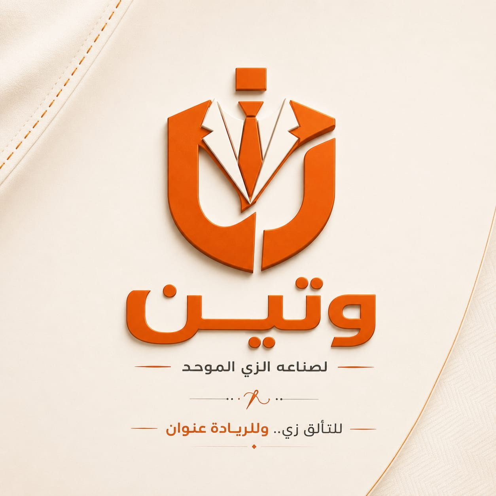
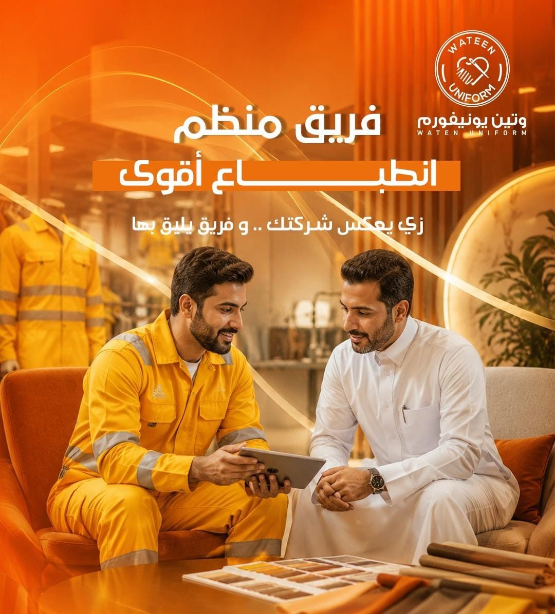
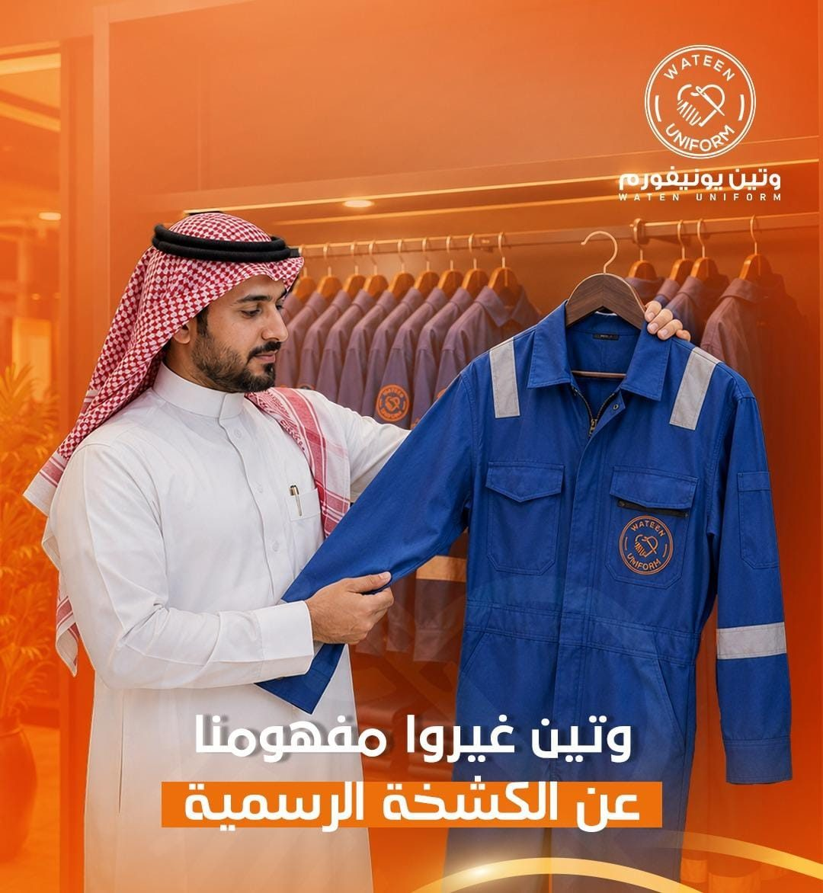
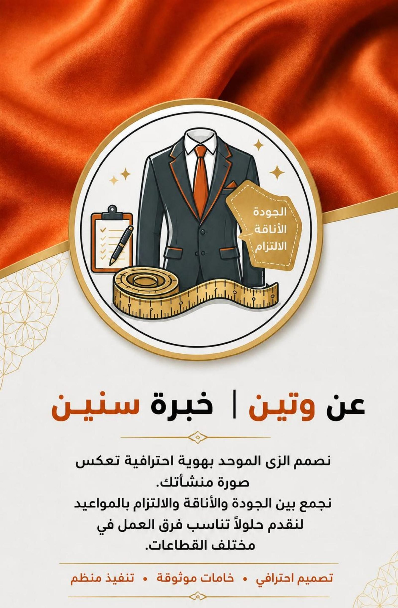
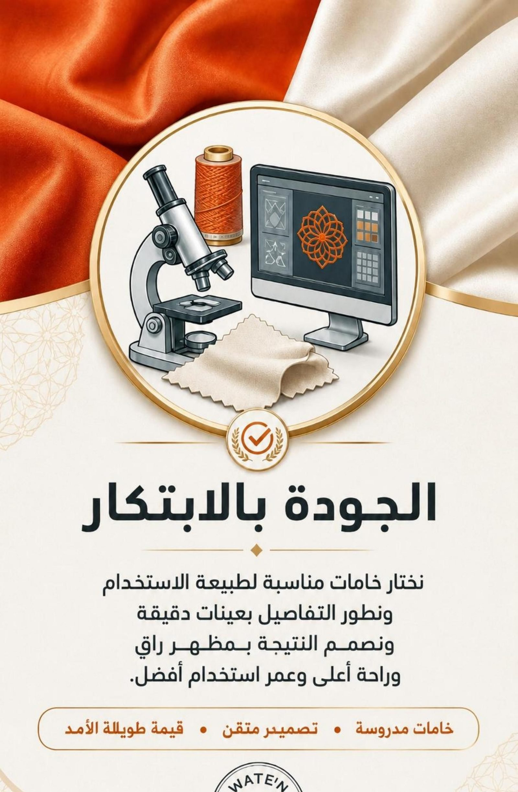
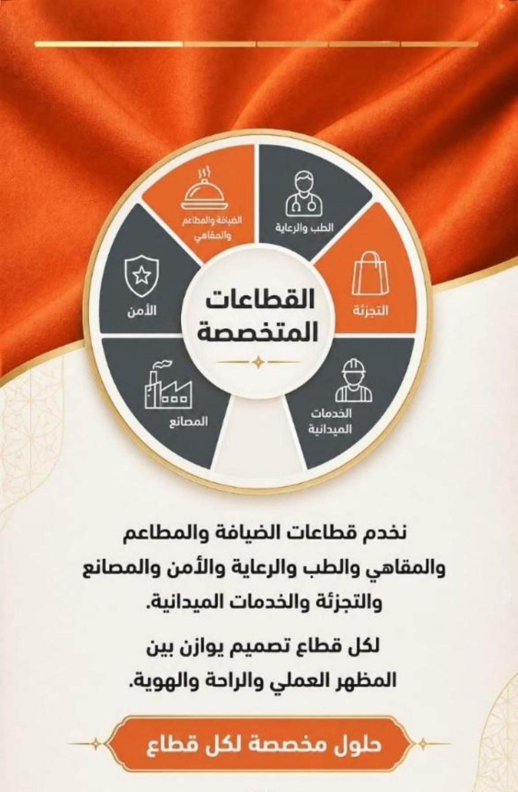
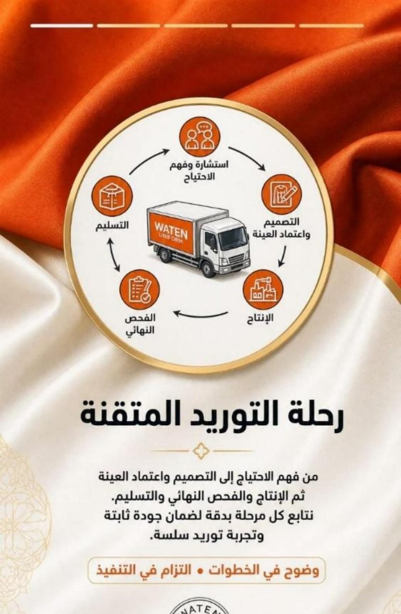
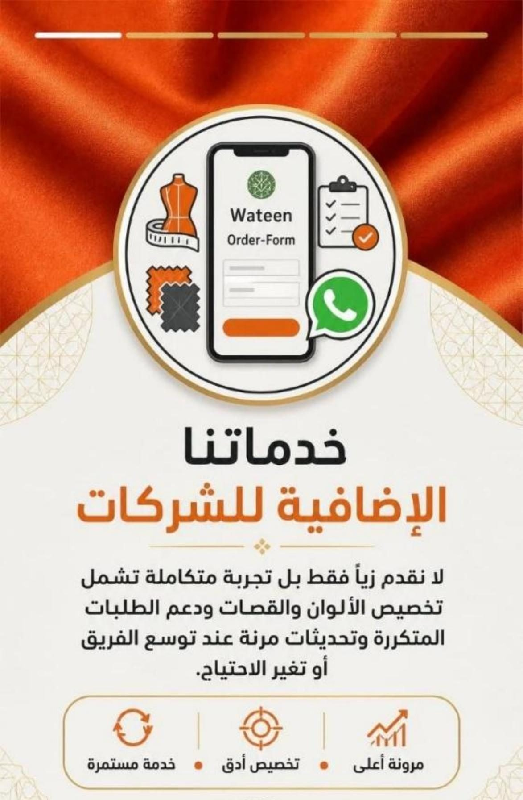
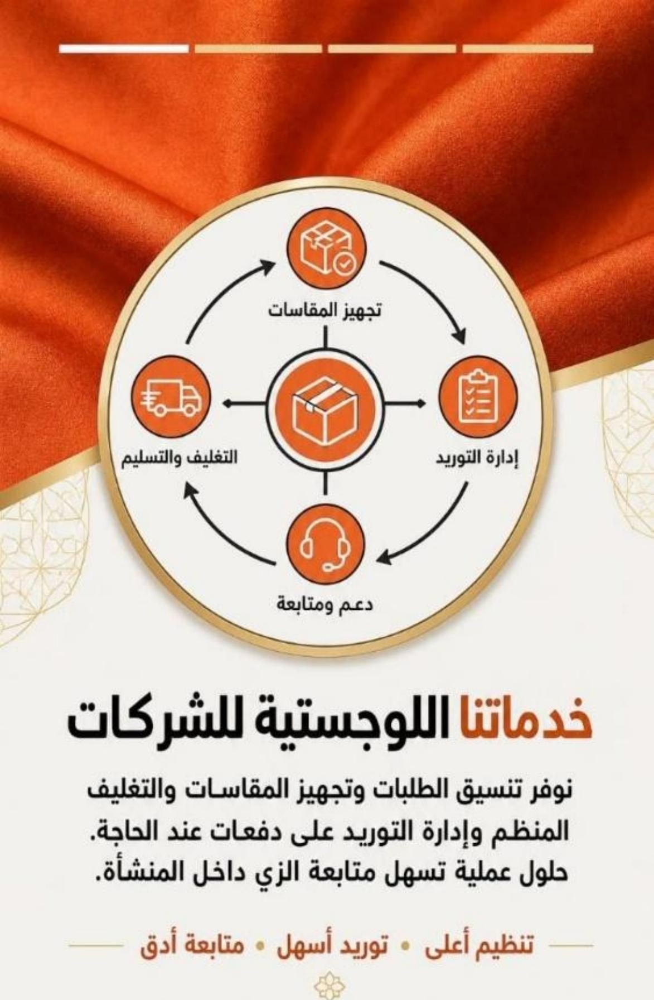
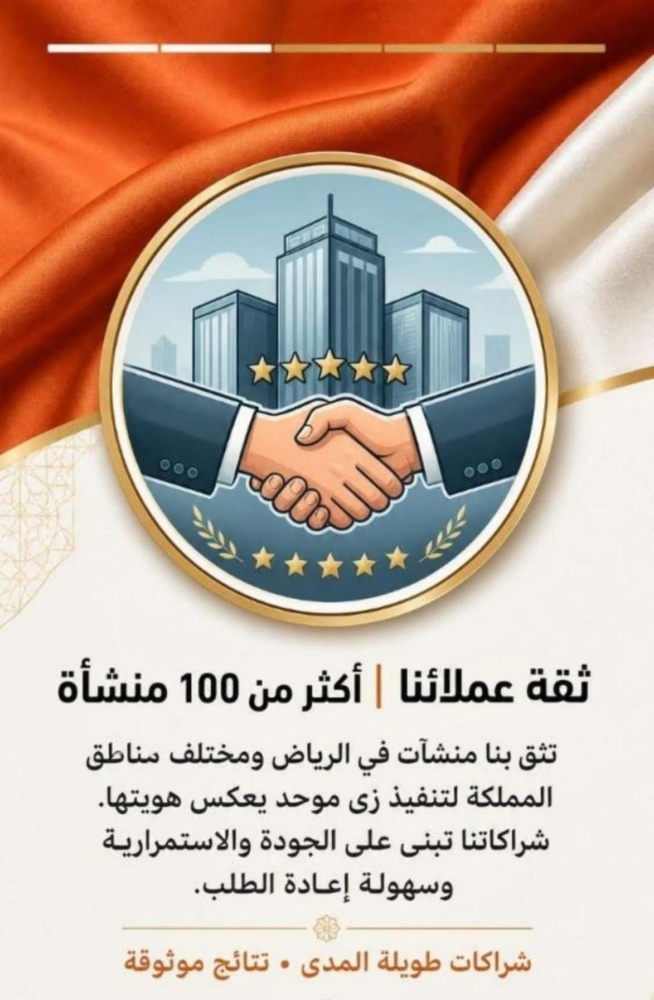

وتين يونيفورم WATEN
وتين علامة سعودية متخصصة في تصميم وتصنيع الزي الموحد للشركات والمنشآت، بتغطي قطاعات الضيافة والمطاعم والطب والأمن والمصانع والتجزئة. اشتغلت على هوية المحتوى بتاعتها من سكريبتات الريلز لمحتوى الهايلايتس على انستجرام.
"التميز المؤسسي ليس تفصيلاً عابراً، بل هو صياغة لهوية تسبق حضوركم في الميدان. حينما يرتدي فريقك وتين، فإنهم لا يرتدون مجرد زيّ، بل يجسدون معايير شركتك في الانضباط والرقي البصري أمام عملائك."
على الشاشة: لو شركتك كانت فريق…
صوت: لو شركتك كانت فريق داخل تحدي كبير…
على الشاشة: هل مظهره يعكس هويته؟
صوت: هل مظهر فريقك يعكس اسم شركتك؟
على الشاشة: من القماش… للتصميم… للتفصيل
صوت: في وتين يونيفورم، كل تفصيلة محسوبة… من القماش، للون، للتصميم.
على الشاشة: زي موحد يعكس هوية شركتك
صوت: علشان يظهر فريقك بصورة واحدة، واثقة، واحترافية.
على الشاشة: وتين يونيفورم — زي قوي… حضور أقوى
صوت: وتين يونيفورم… زي يعكس قوة فريقك.
هل فريقك يترك الانطباع الأول الصحيح؟ هل زيهم يعكس قوة علامتك التجارية؟ في وتين للزي الموحد، نصنع ملابس عمل تجمع بين الجودة، العملية، والحضور القوي. غيروا مفهوم الكشخة الرسمية مع وتين.


هايلايتس انستجرام — بروشور "عن وتين"






